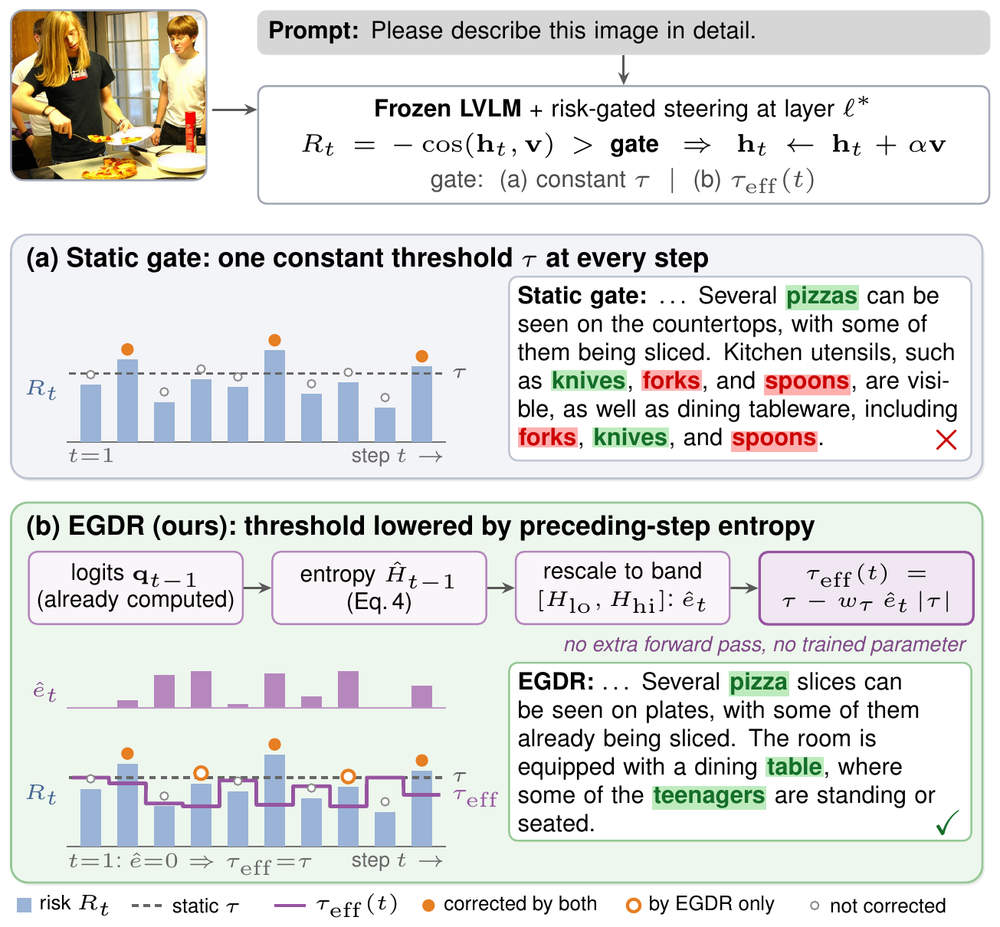
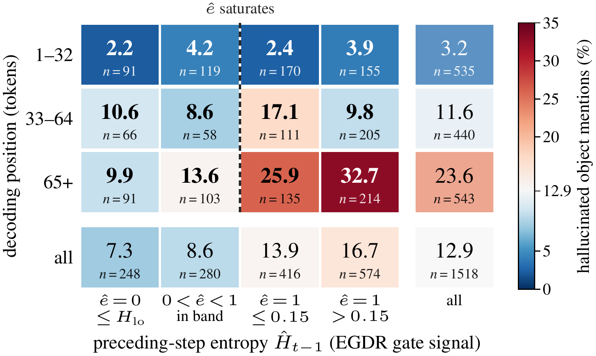
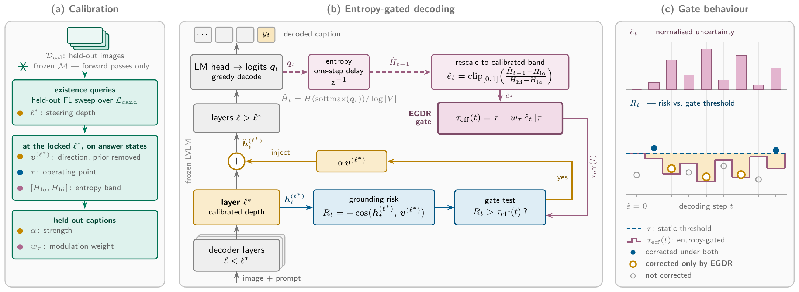
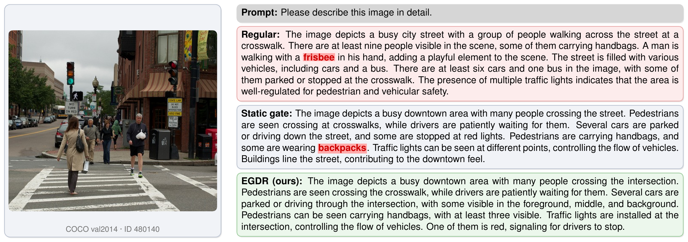

Entropy-Gated Dynamic Rectification for Object Hallucination in Large Vision-Language Models
1United International University, Bangladesh 2BRAC University, Bangladesh

Abstract
Large Vision-Language Models (LVLMs) routinely name objects that are absent from the image. Latent steering can reduce this failure in one model forward pass, but a fixed gate treats early and late decoding steps by the same criterion. We observe that predictive entropy varies sharply within free-running generation, while states that commit to short answers occupy a narrow, confident band. We exploit this temporal mismatch by using uncertainty as a causally available, token-local control signal for an existing steering gate. We propose Entropy-Gated Dynamic Rectification (EGDR), which lowers the intervention threshold when entropy derived from the preceding step's already available logits is high and retains the calibrated operating point when it is low. On LLaVA-1.5-7B, the underlying static gate lowers CHAIR CS/CI from 53.00/15.30 to 32.00/14.30; replacing only its constant threshold with EGDR further lowers them to 29.00/13.60. At a matched 58% intervention rate, the corresponding static control obtains 30.50/14.00. The gain over the static gate holds on LLaVA-NeXT-7B and grows with the generation budget, while POPE scores and general multimodal capability remain effectively unchanged. EGDR requires no additional model forward pass and adds roughly 2% measured latency.
Why preceding-step entropy?
States at which LLaVA-1.5 commits to a short answer occupy a narrow entropy band (0.008 to 0.059), yet 71.6% of steps in 512-token captions lie above it. Hallucinations follow the same pattern: the share of hallucinated object mentions rises from 3.2% in the first 32 tokens to 23.6% beyond token 64, and from 7.3% after a confident step to 16.7% after the most uncertain ones.

Method

- Calibrate once. On a small held-out pool of COCO train2014 images with yes/no existence queries, select the steering layer by validation F1, build a visual direction with the language prior projected out, and set τ at the 80th percentile of risk on correctly answered queries.
- Read uncertainty. At step t, the normalized entropy of the distribution produced at step t−1 is rescaled to the calibrated band [Hlo, Hhi], giving êt ∈ [0, 1]. These logits already exist, so no forward pass is added.
- Gate the correction. The fixed correction αv is injected only when the risk Rt = −cos(ht, v) exceeds the lowered threshold. Direction and strength never change.
τeff(t) = τ − wτ · êt · |τ|
Scaling by |τ| lowers the threshold for either sign of τ; with wτ = 0, EGDR is exactly the static gate.
Results
CHAIR on LLaVA-1.5-7B
EGDR attains the lowest CS and CI with captions almost as long as the static gate's; VTI lowers CS largely by shortening captions.
| Method | CS ↓ | CI ↓ | Length (words) |
|---|---|---|---|
| Regular | 53.00 | 15.30 | 96.1 |
| VCD | 51.50 | 15.90 | 97.8 |
| M3ID | 49.50 | 14.00 | 94.2 |
| ONLY | 50.00 | 14.20 | 93.4 |
| AGLA | 50.50 | 13.90 | 95.0 |
| VTI | 36.00 | 15.60 | 78.3 |
| Static gate | 32.00 | 14.30 | 88.4 |
| EGDR (ours) | 29.00 | 13.60 | 87.6 |
Isolating the gate
A static gate lowered until it fires as often as EGDR recovers only part of the gain; the remaining margin comes from when the correction is applied.
| Configuration | Gate open (% of steps) | CS ↓ | CI ↓ |
|---|---|---|---|
| Static, calibrated τ | 21.0 | 32.00 | 14.30 |
| Static, matched firing rate | 58.2 | 30.50 | 14.00 |
| EGDR (ours) | 58.0 | 29.00 | 13.60 |
Generation budget (tokens)
With no preceding steps there is no signal, so the margin over the static gate grows with caption length on both backbones.
| LLaVA-1.5-7B · CS / CI | |||
|---|---|---|---|
| Method | 64 | 128 | 512 |
| Regular | 22.00 / 9.00 | 38.00 / 12.20 | 53.00 / 15.30 |
| Static gate | 14.00 / 7.40 | 24.00 / 10.40 | 32.00 / 14.30 |
| EGDR | 13.50 / 7.30 | 22.50 / 10.00 | 29.00 / 13.60 |
| LLaVA-NeXT-7B · CS / CI | |||
|---|---|---|---|
| Method | 64 | 128 | 512 |
| Regular | 11.00 / 4.60 | 19.00 / 6.10 | 30.00 / 7.49 |
| Static gate | 9.00 / 4.00 | 16.00 / 5.20 | 26.00 / 6.32 |
| EGDR | 8.80 / 3.95 | 15.20 / 5.05 | 24.50 / 6.05 |
Discriminative accuracy and general capability
Both gates share τ at the first token, so on POPE EGDR stays within 0.02 F1 of the static gate; MME and MM-Vet are preserved. Decoding costs 14.60 ms per token against 14.29 ms unsteered.
| POPE F1 ↑ | |||||
|---|---|---|---|---|---|
| Method | Random | Popular | Adversarial | MME ↑ | MM-Vet ↑ |
| Regular | 86.53 | 84.85 | 82.45 | 1754.33 | 31.10 |
| VTI | 86.19 | 84.01 | 80.93 | 1690.20 | 26.00 |
| Static gate | 88.62 | 86.61 | 83.51 | 1787.27 | 33.53 |
| EGDR (ours) | 88.64 | 86.63 | 83.49 | 1786.10 | 33.20 |
Qualitative example

Citation
@inproceedings{alvi2027egdr,
title = {Entropy-Gated Dynamic Rectification for Object Hallucination
in Large Vision-Language Models},
author = {Alvi, Riasad and Shuvo, Md. Asaduzzaman and Habib, Md. Ahashan
and Sayeedi, Md. Faiyaz Abdullah},
booktitle = {Proceedings of the IEEE/CVF Winter Conference on Applications
of Computer Vision (WACV)},
year = {2027}
}